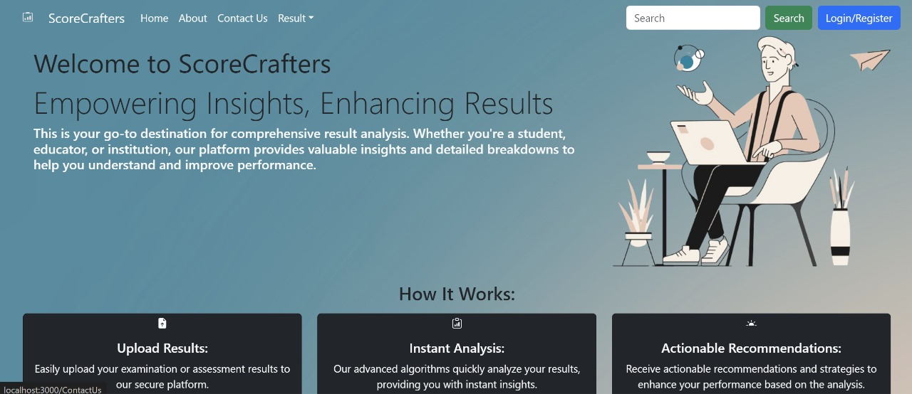

Computer Engineering Student
I am a passionate computer engineering student with a strong interest in software development and hardware design. I have experience in programming languages such as C, C++, Python, and Java. I enjoy solving complex problems and creating innovative solutions.
The Student Result Analysis project is a web-based application designed to analyze and visualize student performance data. It provides a comprehensive platform for teachers and administrators to track and assess student progress over time. Key Features: Student Performance Dashboard: The dashboard displays an overview of student performance metrics such as average scores, grade distributions, and attendance rates. It allows users to filter and sort data based on various parameters such as class, subject, and time period. Individual Student Profiles: Each student has a dedicated profile page that showcases their academic history, including grades, attendance records, and extracurricular activities. Teachers can easily monitor individual student progress and identify areas for improvement. Subject-wise Analysis: The application offers detailed analysis for each subject, including average scores, top-performing students, and areas of weakness. This helps educators tailor their teaching strategies to address specific learning needs. Trend Analysis: The system generates graphical representations of academic trends over time, enabling educators to identify patterns and make data-driven decisions. Users can track improvements or declines in student performance and take proactive measures accordingly. Data Visualization: Interactive charts and graphs provide visual insights into student performance, making it easier to interpret complex data sets. Teachers can create custom reports and share them with colleagues or stakeholders for collaborative analysis. Notification System: The application includes a notification system to alert teachers about important events such as upcoming exams, parent-teacher meetings, or student behavior issues. This ensures timely communication and enhances collaboration between teachers, students, and parents.
Download my resume here.
Email: ukvishal0@gmail.com
Phone: 7507417843